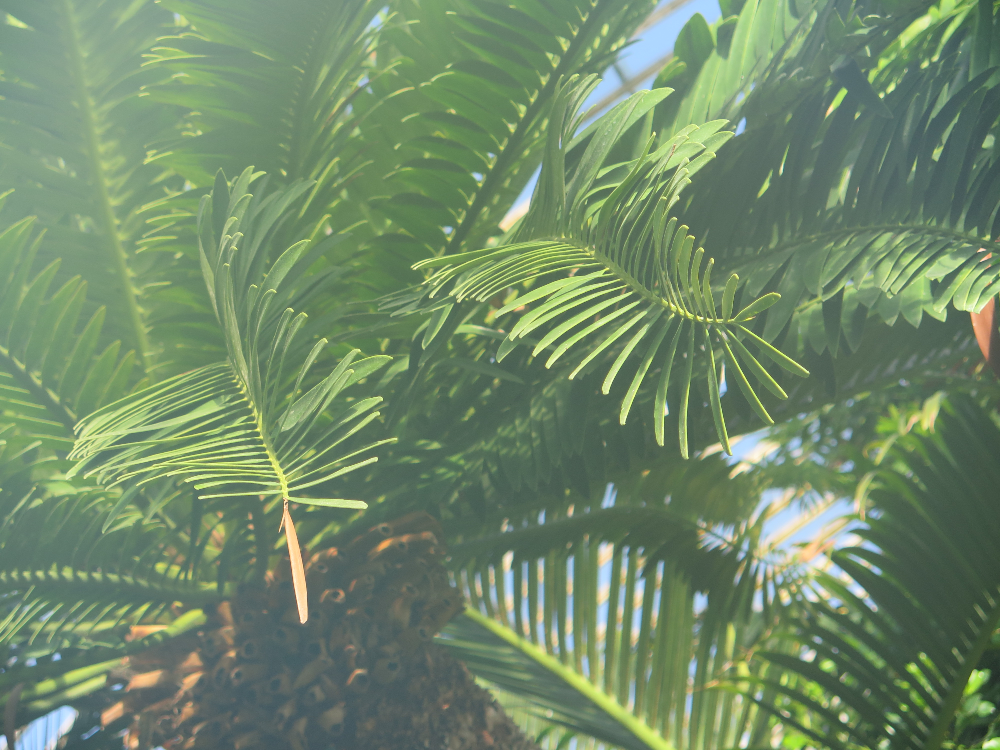
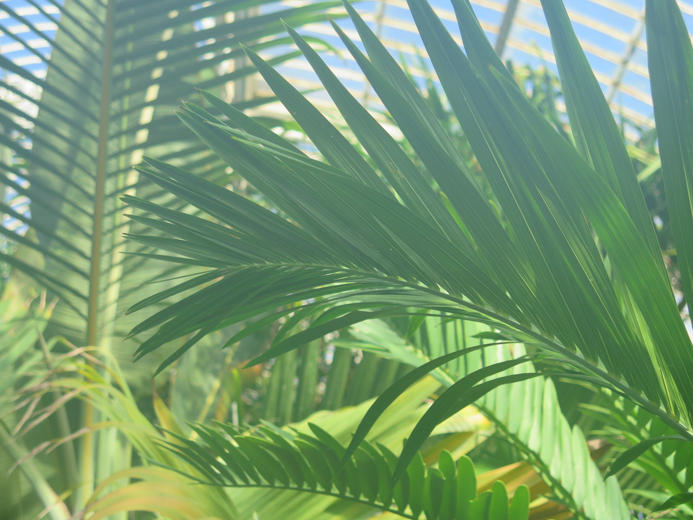

I mostly shoot nature and landscape photography, but I also do product shoots and portraits.
Tropic Wonder (Digital Photography):
 
I create graphic design projects following organizational guidelines, as well as more freely creative marketing material.
Additional project samples available upon request